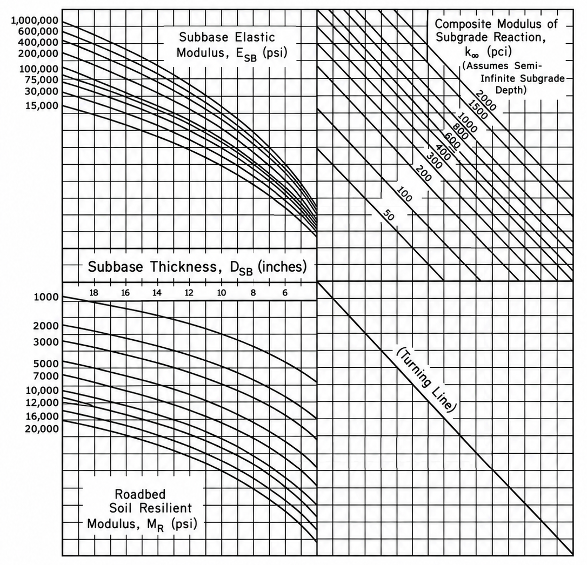
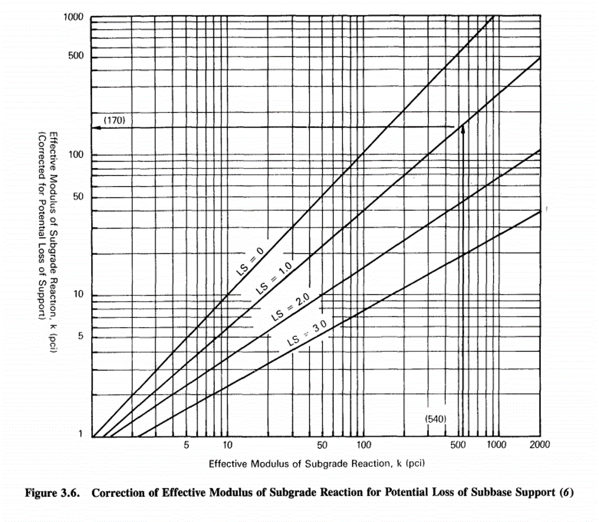

1 · Composite Reaction
Composite Subgrade Reaction · k∞
pci
— MN/m³
Enter all three inputs to calculate.
2 · Loss of Support
pci
1–2,000 pci · After applicable seasonal/foundation adjustmentsEffective k: — pci
0–3 · Select for your material and erosion potential
Corrected Subgrade Reaction · kcorr
pci
— MN/m³
Enter effective k and LS to calculate.
Approximate Figure 3.6 reading. Fractional LS uses interpolation between printed lines.Model v0.4.0 · Dataset 1.1.0
Supplied package v1.4.0 · Validated With Limitations
Figure 3.3 Nomograph

The red path follows the supplied digital nomograph. Within-range paths use the calibrated chart. Positive values beyond the chart use the nearest edge curves, marked as unverified extrapolated estimates.
Figure 3.6 · Loss-of-Support Correction

From effective k on the horizontal axis, go up to the selected LS line, then left to read kcorr. FHWA · LS selection guidance